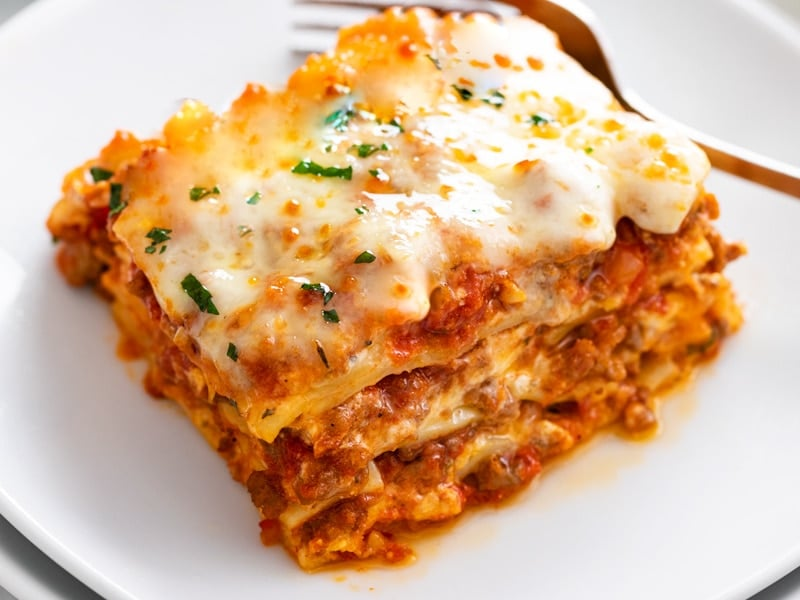

Lasagna Recipe

This classic lasagna recipe is made with an easy meat sauce as the base.
Layer the sauce with noodles and cheese, then bake until bubbly! This is
great for feeding a big family and freezes well, too.
Ingredients
- 2tsp EVOO
- 1lb ground beef chuck
- 1/2 medium onion, diced
- 1/2 large bell pepper, diced
- 2 cloves garlic, minced
- 1 (28oz) can good-quality tomato sauce
- 3oz tomato paste
- 1 (14oz) can crushed tomatoes
- 2tblsp chopped fresh oregano, or 2tsp dried oregano
- 1/4 cup chopped fresh parsley, packed
- 1tblsp italian seasoning
- 1 pinch garlic powder and/or garlic salt
- 1tblsp red or white wine vinegar
- 1tblsp to 1/4 cup sugar (to taste, optional)
- Salt
To assemble the lasagna
- 1/2lb dry lasagna noodles
- 15oz ricotta chese
- 1 1/2lb mozzarella cheese, grated or sliced
- 1/4lb freshly grated Parmesan cheese
Steps
-
Brown sausage and ground beef with onion and garlic in a large Dutch
oven or heavy pot over medium heat, cooking and stirring until meat is
cooked through, 10 to 15 minutes. Drain and discard grease. Stir tomato
sauce, crushed tomatoes, Italian-style crushed tomatoes, tomato paste,
basil, 2 tablespoons parsley, brown sugar, salt, Italian seasoning,
black pepper, fennel seeds, and 1/2 cup Parmesan cheese into meat
mixture. Bring to a boil, reduce heat to low, and simmer sauce for at
least 1 hour (up to 6 for best flavor). Stir occasionally.
-
Meanwhile, place lasagna noodles into a deep bowl and cover with very
hot tap water; let soak for 30 minutes.
-
Beat egg in a bowl and stir ricotta cheese, 2 tablespoons parsley, 1/2
teaspoon salt, and nutmeg into egg until thoroughly combined.
- Preheat oven to 375 degrees F (190 degrees C).
-
Cover bottom of a 9x13-inch baking dish with 1 cup sauce. Layer 4 soaked
lasagna noodles, 1/3 of the ricotta cheese mixture, 1/3 of the shredded
mozzarella cheese, and 1/4 cup Parmesan cheese in the dish. Repeat
layers twice more, ending with mozzarella and Parmesan cheeses. Cover
dish with aluminum foil.
-
Bake until lasagna noodles are tender and casserole is bubbling, about
45 minutes. Remove foil and bake until cheese topping is lightly
browned, 10 to 15 more minutes. Let stand 15 minutes before serving.